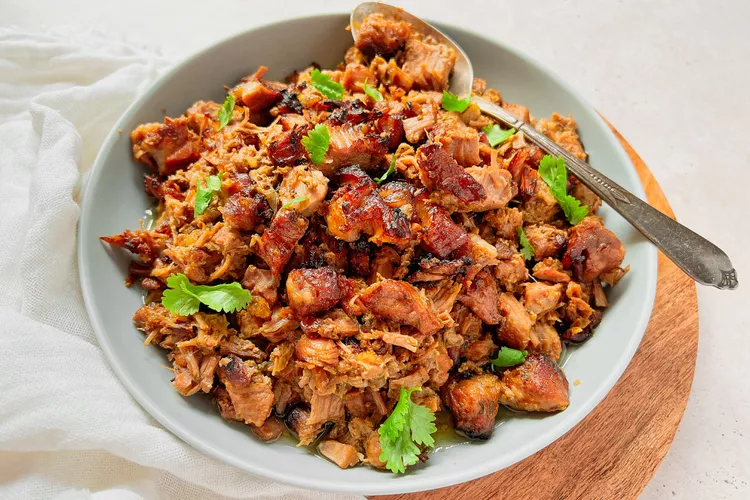

Carnitas

Description
Make homemade carnitas with a short list of ingredients and no special equipment.
The juicy Mexican pulled pork has perfectly crisp edges, ideal for turning into
tacos.
Ingredients
- 1 (3 1/2-pound/1.6kg) boneless pork shoulder or butt, without the rind
- 2 teaspoons kosher salt
- 1 teaspoon ground black pepper
- 1 teaspoon ground cumin
- 2 large white onions, divided
- 3 tablespoons olive oil
- 1/2 cup orange juice
- 1/2 cup dark beer
- 1 bay leaf
- 3 cups fresh cilantro, leaves and stems, roughly chopped, divided
- 4 limes, for serving
- 20 corn tortillas, for serving
- 2 cups salsa, for serving
Steps
- Preheat the oven to 350°F/180°C
- Prepare the pork
- Add the onions, liquids, and aromatics
- Bake the carnitas
- Crisp the carnitas
- Prepare the tortillas and toppings
- Assemble the tacos and serve